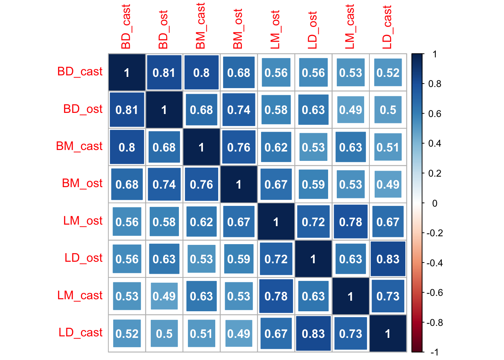
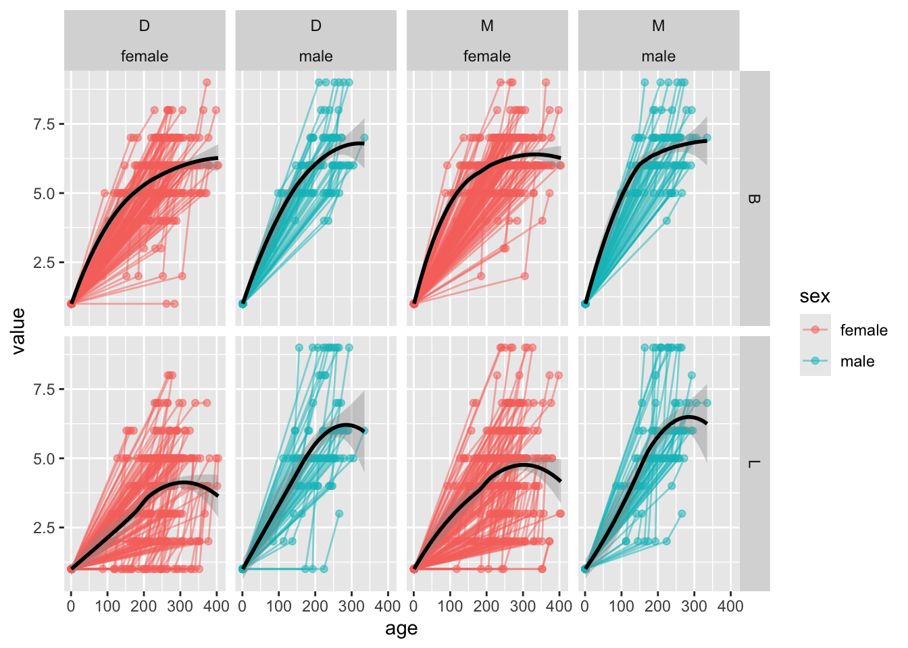
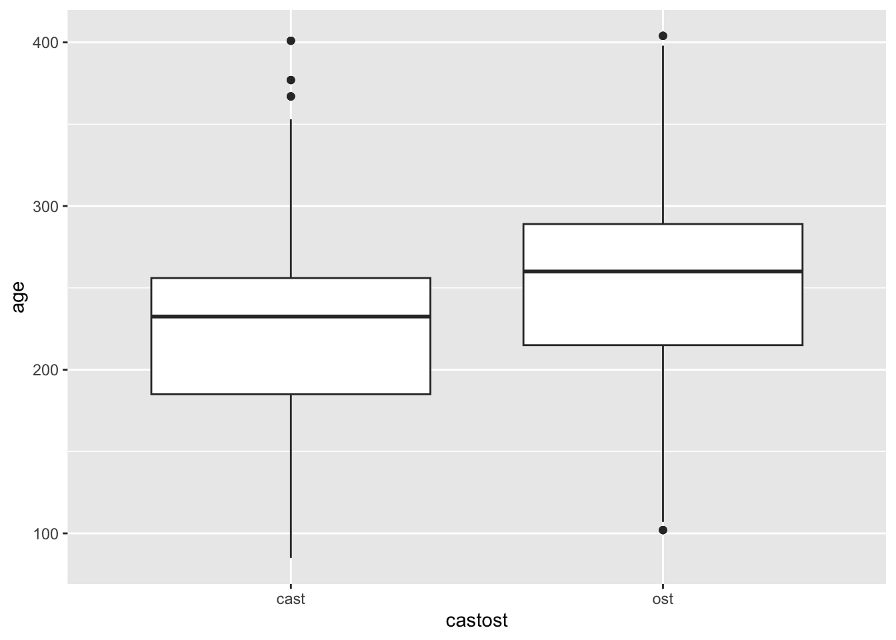

Lastly, here are the questions: - Do wear scores increase with age? (Yes, duh, but we want to test it since we modified the method) - Do wear scores differ by sex? If so, how? (Is this by a specific quadrant? Is this by a side of tooth like buccal side or lingual side?) - Are there any patterns for rate of wear? That is, is there a standard wear through time (by month or year), or are some baboons wearing their teeth down faster that what we might expect?
Exploratory Data Analysis
Variable summaries
summary(scott)
id sex age_cast age_death
Min. : 3.0 Length:202 Min. : 85.0 Min. :102.0
1st Qu.:171.2 Class :character 1st Qu.:185.0 1st Qu.:215.2
Median :262.0 Mode :character Median :232.5 Median :260.0
Mean :285.1 Mean :224.2 Mean :253.2
3rd Qu.:419.8 3rd Qu.:256.0 3rd Qu.:289.0
Max. :621.0 Max. :401.0 Max. :404.0
sfbrid leftright BM_cast BD_cast
Length:202 Length:202 Min. :2.000 Min. :1.000
Class :character Class :character 1st Qu.:5.000 1st Qu.:5.000
Mode :character Mode :character Median :6.000 Median :5.000
Mean :5.856 Mean :5.317
3rd Qu.:6.000 3rd Qu.:6.000
Max. :9.000 Max. :9.000
LM_cast LD_cast BM_ost BD_ost
Min. :1.000 Min. :1.000 Min. :4.000 Min. :1.000
1st Qu.:2.000 1st Qu.:2.000 1st Qu.:6.000 1st Qu.:5.000
Median :4.000 Median :4.000 Median :6.000 Median :6.000
Mean :4.094 Mean :3.614 Mean :6.505 Mean :6.064
3rd Qu.:5.000 3rd Qu.:5.000 3rd Qu.:7.000 3rd Qu.:7.000
Max. :9.000 Max. :9.000 Max. :9.000 Max. :9.000
LM_ost LD_ost
Min. :2.000 Min. :1.000
1st Qu.:4.000 1st Qu.:3.000
Median :5.000 Median :5.000
Mean :5.347 Mean :4.688
3rd Qu.:6.000 3rd Qu.:6.000
Max. :9.000 Max. :9.000
Correlations

Data Viz: Age vs wear by sex
`geom_smooth()` using method = 'loess' and formula = 'y ~ x'

Age distributions by measurement time.
ggplot(aes(x = castost, y = age), data = scott_long %>%filter(age >1)) +geom_boxplot() +scale_color_discrete(guide="none")

Do wear scores increase with age? (Yes, duh, but we want to test it since we modified the method)
The tests below test the following hypothesis: \(H_0: \mu_{cast} = \mu_{ost}\) vs \(H_0: \mu_{cast} < \mu_{ost}\) for each location of the tooth individually. The test used here is a two sample dependent t-test. In all cases, the null hypothesis is rejected with a p-value less than \(2.2 \times 10^{-16}\). There is statistical evidence that the mean at ost is larger than the mean at cast.
t.test(scott$BM_cast, scott$BM_ost, paired =TRUE, alternative ="less")
Paired t-test
data: scott$BM_cast and scott$BM_ost
t = -13.771, df = 201, p-value < 2.2e-16
alternative hypothesis: true mean difference is less than 0
95 percent confidence interval:
-Inf -0.5706953
sample estimates:
mean difference
-0.6485149
t.test(scott$BD_cast, scott$BD_ost, paired =TRUE, alternative ="less")
Paired t-test
data: scott$BD_cast and scott$BD_ost
t = -15.363, df = 201, p-value < 2.2e-16
alternative hypothesis: true mean difference is less than 0
95 percent confidence interval:
-Inf -0.6671212
sample estimates:
mean difference
-0.7475248
t.test(scott$LM_cast, scott$LM_ost, paired =TRUE, alternative ="less")
Paired t-test
data: scott$LM_cast and scott$LM_ost
t = -15.299, df = 201, p-value < 2.2e-16
alternative hypothesis: true mean difference is less than 0
95 percent confidence interval:
-Inf -1.117192
sample estimates:
mean difference
-1.252475
t.test(scott$LD_cast, scott$LD_ost, paired =TRUE, alternative ="less")
Paired t-test
data: scott$LD_cast and scott$LD_ost
t = -14.154, df = 201, p-value < 2.2e-16
alternative hypothesis: true mean difference is less than 0
95 percent confidence interval:
-Inf -0.9488388
sample estimates:
mean difference
-1.074257
Modeling effect of age
Here are pearson correlation values for you. But the relationship clearly isn’t linear so these probably aren’t what you want. I’ve also computed Spearman correlation for you, which tests for any kind of monotonic relationship. This is much closer to what you are looking for than Pearson’s coefficient.
Warning in cor.test.default(scott$BM_cast, scott$age_cast, method =
"spearman"): Cannot compute exact p-value with ties
Spearman's rank correlation rho
data: scott$BM_cast and scott$age_cast
S = 980622, p-value = 3.654e-05
alternative hypothesis: true rho is not equal to 0
sample estimates:
rho
0.2861458
Warning in cor.test.default(scott$BD_cast, scott$age_cast, method =
"spearman"): Cannot compute exact p-value with ties
Spearman's rank correlation rho
data: scott$BD_cast and scott$age_cast
S = 884530, p-value = 1.98e-07
alternative hypothesis: true rho is not equal to 0
sample estimates:
rho
0.3560972
Warning in cor.test.default(scott$LM_cast, scott$age_cast, method =
"spearman"): Cannot compute exact p-value with ties
Spearman's rank correlation rho
data: scott$LM_cast and scott$age_cast
S = 1179306, p-value = 0.04455
alternative hypothesis: true rho is not equal to 0
sample estimates:
rho
0.1415119
Warning in cor.test.default(scott$LD_cast, scott$age_cast, method =
"spearman"): Cannot compute exact p-value with ties
Spearman's rank correlation rho
data: scott$LD_cast and scott$age_cast
S = 1234954, p-value = 0.1526
alternative hypothesis: true rho is not equal to 0
sample estimates:
rho
0.1010022
Warning in cor.test.default(scott$BM_ost, scott$age_death, method =
"spearman"): Cannot compute exact p-value with ties
Spearman's rank correlation rho
data: scott$BM_ost and scott$age_death
S = 1163676, p-value = 0.02983
alternative hypothesis: true rho is not equal to 0
sample estimates:
rho
0.1528901
Warning in cor.test.default(scott$BD_ost, scott$age_death, method =
"spearman"): Cannot compute exact p-value with ties
Spearman's rank correlation rho
data: scott$BD_ost and scott$age_death
S = 961396, p-value = 1.426e-05
alternative hypothesis: true rho is not equal to 0
sample estimates:
rho
0.3001418
Warning in cor.test.default(scott$LM_ost, scott$age_death, method =
"spearman"): Cannot compute exact p-value with ties
Spearman's rank correlation rho
data: scott$LM_ost and scott$age_death
S = 1264346, p-value = 0.2601
alternative hypothesis: true rho is not equal to 0
sample estimates:
rho
0.07960586
Warning in cor.test.default(scott$LD_ost, scott$age_death, method =
"spearman"): Cannot compute exact p-value with ties
Spearman's rank correlation rho
data: scott$LD_ost and scott$age_death
S = 1231301, p-value = 0.1421
alternative hypothesis: true rho is not equal to 0
sample estimates:
rho
0.1036615
Warning in cor.test.default(scott$BM_cast, scott$age_cast, method =
"spearman"): Cannot compute exact p-value with ties
Warning in cor.test.default(scott$BD_cast, scott$age_cast, method =
"spearman"): Cannot compute exact p-value with ties
Warning in cor.test.default(scott$LM_cast, scott$age_cast, method =
"spearman"): Cannot compute exact p-value with ties
Warning in cor.test.default(scott$LD_cast, scott$age_cast, method =
"spearman"): Cannot compute exact p-value with ties
Warning in cor.test.default(scott$BM_ost, scott$age_death, method =
"spearman"): Cannot compute exact p-value with ties
Warning in cor.test.default(scott$BD_ost, scott$age_death, method =
"spearman"): Cannot compute exact p-value with ties
Warning in cor.test.default(scott$LM_ost, scott$age_death, method =
"spearman"): Cannot compute exact p-value with ties
Warning in cor.test.default(scott$LD_ost, scott$age_death, method =
"spearman"): Cannot compute exact p-value with ties
out %>%pivot_wider(names_from ="BDLM", values_from ="pvalue")
Do wear scores differ by sex? If so, how? (Is this by a specific quadrant? Is this by a side of tooth like buccal side or lingual side?)
If we ignore age entirely, there are significant differences in the mean vector of wear for males vs females at bost cast and ost. If we then do individual tests for wear differences by region at cast and ost separately, there are signficant differences in LM and LD at cast and LM at ost. (I used a 0.05 level of significant and a Bonferroni correction with 8 tests to gets a cut off for significance of 0.00625. This is, as always, conservative.)
#Look for differences in male vs female with a hotelling t testlibrary(Hotelling)
Loading required package: corpcor
Attaching package: 'Hotelling'
The following object is masked from 'package:dplyr':
summarise
results_cast <-hotelling.test(.~sex, data = scott %>%select(sex,BM_cast, BD_cast, LM_cast, LD_cast), var.equal =FALSE)results_cast
#Now do individual t-tests on each componentt.test(BM_cast~sex,data = scott)
Welch Two Sample t-test
data: BM_cast by sex
t = -1.0677, df = 89.469, p-value = 0.2885
alternative hypothesis: true difference in means between group female and group male is not equal to 0
95 percent confidence interval:
-0.4743964 0.1427512
sample estimates:
mean in group female mean in group male
5.814570 5.980392
t.test(BD_cast~sex,data = scott)
Welch Two Sample t-test
data: BD_cast by sex
t = -2.1367, df = 88.856, p-value = 0.03537
alternative hypothesis: true difference in means between group female and group male is not equal to 0
95 percent confidence interval:
-0.75133061 -0.02726958
sample estimates:
mean in group female mean in group male
5.218543 5.607843
t.test(LD_cast~sex,data = scott)
Welch Two Sample t-test
data: LD_cast by sex
t = -5.9193, df = 81.962, p-value = 7.24e-08
alternative hypothesis: true difference in means between group female and group male is not equal to 0
95 percent confidence interval:
-2.267221 -1.126624
sample estimates:
mean in group female mean in group male
3.185430 4.882353
t.test(LM_cast~sex,data = scott)
Welch Two Sample t-test
data: LM_cast by sex
t = -4.4066, df = 91.756, p-value = 2.843e-05
alternative hypothesis: true difference in means between group female and group male is not equal to 0
95 percent confidence interval:
-1.7201029 -0.6512774
sample estimates:
mean in group female mean in group male
3.794702 4.980392
#Now do individual t-tests on each component for ost t.test(BM_ost~sex,data = scott)
Welch Two Sample t-test
data: BM_ost by sex
t = -2.1975, df = 72.846, p-value = 0.03116
alternative hypothesis: true difference in means between group female and group male is not equal to 0
95 percent confidence interval:
-0.71266152 -0.03477387
sample estimates:
mean in group female mean in group male
6.410596 6.784314
t.test(BD_ost~sex,data = scott)
Welch Two Sample t-test
data: BD_ost by sex
t = -2.6646, df = 78.037, p-value = 0.009362
alternative hypothesis: true difference in means between group female and group male is not equal to 0
95 percent confidence interval:
-0.8578023 -0.1241481
sample estimates:
mean in group female mean in group male
5.940397 6.431373
t.test(LD_ost~sex,data = scott)
Welch Two Sample t-test
data: LD_ost by sex
t = -6.2685, df = 78.183, p-value = 1.856e-08
alternative hypothesis: true difference in means between group female and group male is not equal to 0
95 percent confidence interval:
-2.312318 -1.197615
sample estimates:
mean in group female mean in group male
4.245033 6.000000
t.test(LM_ost~sex,data = scott)
Welch Two Sample t-test
data: LM_ost by sex
t = -4.636, df = 76.593, p-value = 1.434e-05
alternative hypothesis: true difference in means between group female and group male is not equal to 0
95 percent confidence interval:
-1.8871464 -0.7530302
sample estimates:
mean in group female mean in group male
5.013245 6.333333
Modeling without adding in age 1.
But we should really be controlling for sex and age and id all at once. So we do that here using the observed data. I’m assuming linearity of the relationship between age and wear here.
BM model
library(lme4)
Loading required package: Matrix
Attaching package: 'Matrix'
The following objects are masked from 'package:tidyr':
expand, pack, unpack
mod_bm <-lmer(value ~ age * sex + (1|id), data = scott_long %>%filter(BLMD =="BM"& age >1))mod_bm_red <-lmer(value ~ age + (1|id), data = scott_long %>%filter(BLMD =="BM"& age >1))#test stat-2*(logLik(mod_bm_red) -logLik(mod_bm))
Linear mixed model fit by REML ['lmerMod']
Formula: value ~ age * sex + (1 | id)
Data: scott_long %>% filter(BLMD == "BM" & age > 1)
REML criterion at convergence: 1029.9
Scaled residuals:
Min 1Q Median 3Q Max
-3.5985 -0.4909 -0.0181 0.4744 2.3902
Random effects:
Groups Name Variance Std.Dev.
id (Intercept) 0.6855 0.8280
Residual 0.2986 0.5464
Number of obs: 404, groups: id, 202
Fixed effects:
Estimate Std. Error t value
(Intercept) 4.297378 0.271336 15.838
age 0.007310 0.001051 6.956
sexmale -0.643460 0.529005 -1.216
age:sexmale 0.005668 0.002324 2.439
Correlation of Fixed Effects:
(Intr) age sexmal
age -0.962
sexmale -0.513 0.493
age:sexmale 0.435 -0.452 -0.958
Linear mixed model fit by REML ['lmerMod']
Formula: value ~ age * sex + (1 | id)
Data: scott_long %>% filter(BLMD == "BD" & age > 1)
REML criterion at convergence: 1085
Scaled residuals:
Min 1Q Median 3Q Max
-3.1920 -0.4849 0.0213 0.5208 2.1544
Random effects:
Groups Name Variance Std.Dev.
id (Intercept) 0.8460 0.9198
Residual 0.3257 0.5707
Number of obs: 404, groups: id, 202
Fixed effects:
Estimate Std. Error t value
(Intercept) 2.953393 0.293663 10.057
age 0.010575 0.001136 9.310
sexmale -0.376460 0.571225 -0.659
age:sexmale 0.005800 0.002505 2.316
Correlation of Fixed Effects:
(Intr) age sexmal
age -0.960
sexmale -0.514 0.494
age:sexmale 0.436 -0.453 -0.956
newx <-data.frame(age =1:400, sex ="female")newx$yhat <- (predict(mod_bd, newdata = newx, re.form =~0))newxm <-data.frame(age =1:300, sex ="male")newxm$yhat <- (predict(mod_bd, newdata = newxm, re.form =~0))ggplot(aes(x = age, y = yhat), data = newx) +geom_path(col ="pink", lwd =2) +geom_point(aes(x = age, y = value, col = sex), data = scott_long %>%filter(BLMD =="BD")) +geom_path(aes(x = age, y = yhat), data = newxm, col ="blue", lwd =2)
LM model
library(lme4)mod_lm <-lmer(value ~ age * sex + (1|id), data = scott_long %>%filter(BLMD =="LM"& age >1))mod_lm_red <-lmer(value ~ age + (1|id), data = scott_long %>%filter(BLMD =="LM"& age >1))#test stat-2*(logLik(mod_lm_red) -logLik(mod_lm))
Linear mixed model fit by REML ['lmerMod']
Formula: value ~ age * sex + (1 | id)
Data: scott_long %>% filter(BLMD == "LM" & age > 1)
REML criterion at convergence: 1498.8
Scaled residuals:
Min 1Q Median 3Q Max
-3.0781 -0.4614 0.0396 0.4585 3.1828
Random effects:
Groups Name Variance Std.Dev.
id (Intercept) 2.127 1.4584
Residual 0.991 0.9955
Number of obs: 404, groups: id, 202
Fixed effects:
Estimate Std. Error t value
(Intercept) 1.075884 0.484758 2.219
age 0.013402 0.001879 7.134
sexmale -0.028880 0.946246 -0.031
age:sexmale 0.008525 0.004160 2.049
Correlation of Fixed Effects:
(Intr) age sexmal
age -0.962
sexmale -0.512 0.493
age:sexmale 0.435 -0.452 -0.958
Linear mixed model fit by REML ['lmerMod']
Formula: value ~ age * sex + (1 | id)
Data: scott_long %>% filter(BLMD == "BD" & age > 1)
REML criterion at convergence: 1085
Scaled residuals:
Min 1Q Median 3Q Max
-3.1920 -0.4849 0.0213 0.5208 2.1544
Random effects:
Groups Name Variance Std.Dev.
id (Intercept) 0.8460 0.9198
Residual 0.3257 0.5707
Number of obs: 404, groups: id, 202
Fixed effects:
Estimate Std. Error t value
(Intercept) 2.953393 0.293663 10.057
age 0.010575 0.001136 9.310
sexmale -0.376460 0.571225 -0.659
age:sexmale 0.005800 0.002505 2.316
Correlation of Fixed Effects:
(Intr) age sexmal
age -0.960
sexmale -0.514 0.494
age:sexmale 0.436 -0.453 -0.956
newx <-data.frame(age =1:400, sex ="female")newx$yhat <- (predict(mod_ld, newdata = newx, re.form =~0))newxm <-data.frame(age =1:300, sex ="male")newxm$yhat <- (predict(mod_ld, newdata = newxm, re.form =~0))ggplot(aes(x = age, y = yhat), data = newx) +geom_path(col ="pink", lwd =2) +geom_point(aes(x = age, y = value, col = sex), data = scott_long %>%filter(BLMD =="LD")) +geom_path(aes(x = age, y = yhat), data = newxm, col ="blue", lwd =2)
Are there any patterns for rate of wear? That is, is there a standard wear through time (by month or year), or are some baboons wearing their teeth down faster that what we might expect?